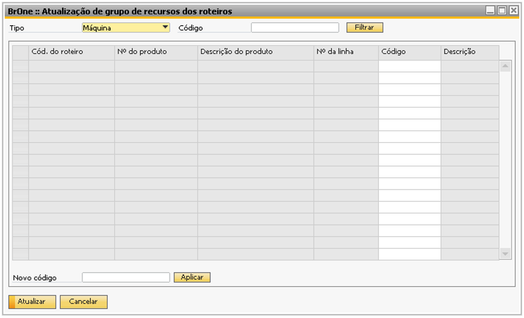
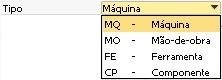
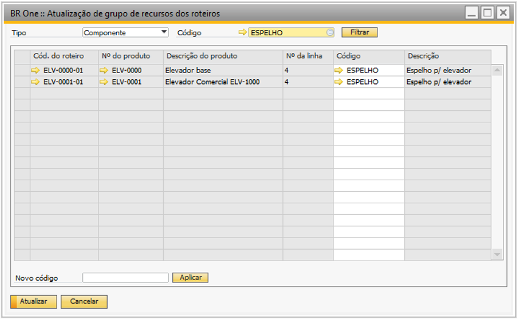
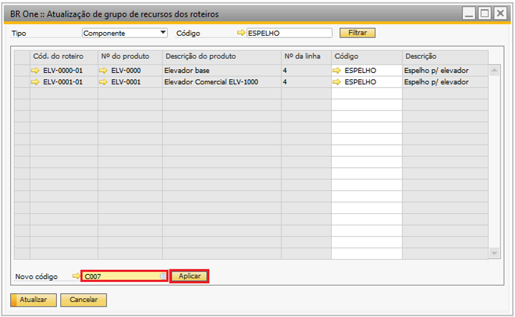
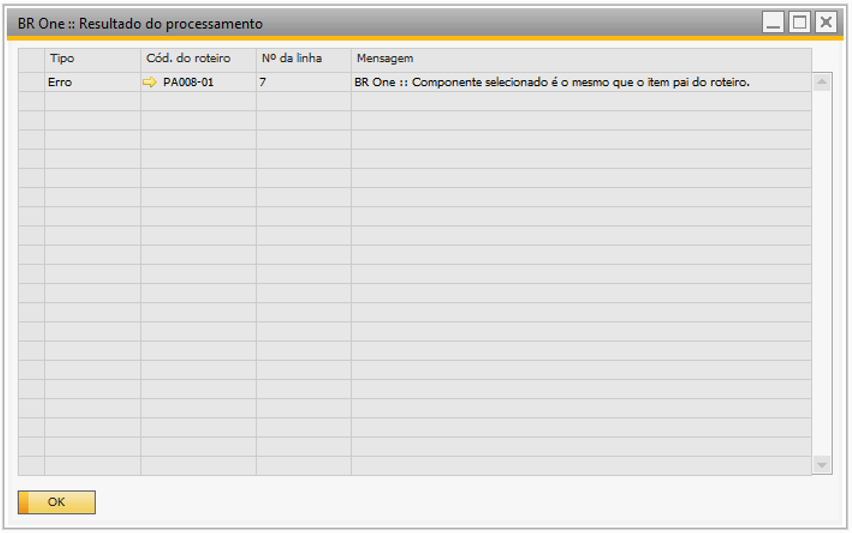

Atualização de grupo de recursos dos roteiros
Para acessar a tela de Atualização de grupo de recursos dos roteiros é necessário ir no menu:
Produção -> Manutenção -> Atualização de grupo de recursos dos roteiros
Essa tela é usada para atualizar o grupo de recursos de uma vez só de vários roteiros, ou apenas de alguns.
{kind=link}
Para filtrar os grupos, primeiramente deve ser escolhido um tipo.
Os tipos são:
{kind=link}
Após definir o tipo, abra a lista de códigos para selecionar o grupo desejado.

Após selecionar o grupo desejado, clique em Filtrar.
{kind=link}
Ao clicar em Filtrar, aparecerão todas as linhas dos roteiros que contém o grupo selecionado. Para mudar todas as linhas de uma vez só, basta selecionar um novo código no campo Novo código e clicar em Aplicar.
{kind=link}
O código e a descrição serão mudados para o novo escolhido. Caso o usuário não queira mudar todos, e sim alguns, basta ir à linha e selecionar um novo grupo.
Após fazer todas as alterações necessárias, basta clicar em Atualizar. Se as mudanças forem feitas corretamente, a seguinte mensagem será exibida:
{kind=link}
BR One :: Roteiros processados com sucesso.
Caso algum erro tenha acontecido no processamento, um alerta será exibido na barra de status e a tela Resultado do processamento será exibida com o erro:
{kind=link}
BR One :: Roteiros processados com alerta.
{kind=link}
Caso o usuário clique em Atualizar sem haver linhas, a seguinte mensagem será exibida:
{kind=link}
BR One :: Não existem linhas para serem atualizadas.
Caso o grupo escolhido não esteja em nenhum roteiro, a seguinte mensagem será exibida:
{kind=link}
BR One :: Não foram retornadas linhas.
Caso o usuário clique no botão Aplicar sem haver um novo código definido, a seguinte mensagem será exibida:
{kind=link}
BR One :: Informe um novo código.
Caso o usuário tente aplicar um novo código sem linhas, a seguinte mensagem será exibida:
{kind=link}
BR One :: Não existem linhas para serem alteradas.